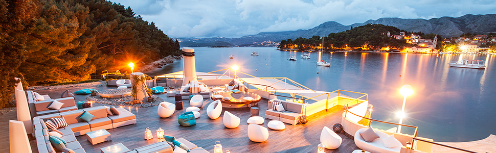
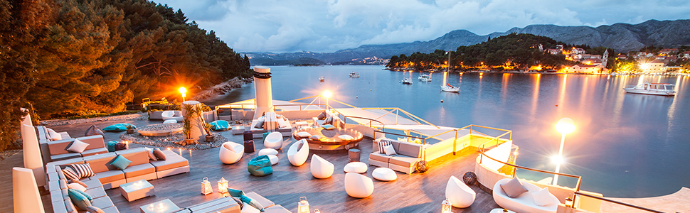

The Multidisciplinary Approach to the Lifestyle Management of Chronic Patients
.jpeg)
Prof. Dr. Jernej Pajek
University Medical Centre Ljubljana
Slovenia
Assoc. prof. dr. Jernej Pajek
Certified in Executive healthcare leadership and Change healthcare leadership, Cornell university (eCornell), Ithaca, NY, USA (October, 2018) -consultant in nephrology (2015-), -quality systems manager (Slovenian Association for Quality and Excellence 2013-), -consultant in internal medicine (2008-), -license for transthoracic echocardiography (Association of Cardiologists of Slovenia 2008-). -doctor of medicine (bachelor’s degree, Faculty of medicine, University of Ljubljana 2000-) Managerial functions: - National coordinator for Nephrology specialization at Medical chamber of Slovenia (2019-) - President of the Commission for Drug Products, UMC Ljubljana (2018-) - Head physician of the Center for peritoneal dialysis and chronic hemodialysis, Clinical Department of Nephrology
Close
Dr. Sc Marijana Geets Kesić
Marijana Geets-Kesić, MD, is currently working at the Department of Anthropology, Faculty of Kinesiology, University of Split. She graduated in 1996 from the School of Medicine, University of Zagreb with title Medical Doctor (MD). After an internship she worked for several NGO’s in different African and Middle East countries. During her humanitarian work she developed an interest for Disaster Management. She continued her education with a master’s degree, earning the qualification “European Master in Disaster Medicine” from the Universita del Piemonte Orientale (Italy) and the Vrije Universiteit Brussels (Belgium) in 2006. For several years she was working as senior teacher in the vocational school for medical students, Zdravstvena škola Split. She participated in several projects and in 2019 as a mentor she won with her team “The ISABS Future Scientist Award” for their work „Antioxidative and antiprolipherative role of Salvia officinalis and Hypericum perforatutum tea“. Currently, her area of interest is mainly focused on health literacy (HL) and physical literacy (PL) as two concepts to improve health, particularly in the period of adolescence.
Close
Section Lectures

Dr. Špela Bogataj
Dr. Špela Bogataj is an assistant professor and researcher with expertise in kinesiology and non-pharmacological interventions for patients with chronic kidney disease (CKD). She obtained her PhD in Sport Science from the University of Ljubljana in 2020, focusing on the effects of exercise and exercise counseling in hemodialysis patients. Her postdoctoral research examined the role of physical and cognitive training in improving functional and cognitive outcomes in CKD patients.
Dr. Bogataj has authored over 35 peer-reviewed publications, serves as an editor for scientific journals, and is an active reviewer in the fields of sport science and nephrology. She has contributed to international conferences through research presentations and collaborations with institutions such as Vrije Universiteit Brussel and Edith Cowan University.
Her current projects include investigating the effects of infrared therapy combined with resistance training to enhance vascular access maturation in hemodialysis patients, the implementation of percutaneous peritoneal dialysis catheter insertion, and the development of patient-centered care strategies to enhance quality of life.
Dr. Bogataj is passionate about translating research into clinical practice, contributing to patient education, and promoting physical activity as a key intervention for individuals with CKD.
Close
Dominik Pogorevc, M.Sc. Psych.
Dominik Pogorevc is a dedicated psychologist with a strong interest in understanding human behavior and improving individuals' well-being within their environment. Currently, Dominik is a psychologist at the University Medical Centre Ljubljana, where he provides psychological counselling and testing alongside being part of a multidisciplinary research team. Previously, he was also involved in research as a research assistant at the Faculty of Arts, University of Ljubljana, contributing to the project Long COVID as a Legacy of the Pandemic: Psychological Symptoms, Psychosocial Factors, and Consequences.
He completed his undergraduate and master's studies in psychology at the Faculty of Arts, University of Ljubljana. Previously, Dominik worked at the Sevnica Health Centre, where he provided psychological counselling in outpatient settings and provided community mental health services. As an editor of the Psihologija dela website, he was responsible for content creation and management, focusing primarily on work & organizational psychology. His passion for media led him to work as a journalist at Radio Študent.
For further inquiries, he can be reached at dominik.pogorevc@kclj.si.
Close
Evelin Colja
Faculty of Health Sciences at the University of Ljubljana
Slovenia
Evelin Colja
Evelin Colja is a physiotherapist and kinesiologist specializing in rehabilitation and movement science. She obtained her bachelor's degree in Physiotherapy from the Faculty of Health Sciences at the University of Ljubljana and later pursued a master's degree in Kinesiology at the Faculty of Sport, University of Ljubljana. She is currently pursuing a doctoral degree in Kinesiology at the Faculty of Sport, University of Ljubljana.
Her professional experience includes working with various populations, from elderly individuals to high-performance athletes. She has authored several publications on manual therapy, COVID-19’s impact on activity, and cognitive-physical exercise in hemodialysis.
Her current projects include developing a multidisciplinary program for the prevention of chronic kidney disease and the development of patient-centered care strategies for hemodialysis patients to enhance quality of life.
Close
PhD. Surven Metolli
PhD. Surven Metolli
Surven Metolli received his PhD title in January 2023 from NSA “Vassil Levski” Sofia, Bulgaria. He also received a Science Degree in General Medicine from the Faculty of Medicine, University of Tirana, Albania, in 2008. He commenced a third study circle program (specialization) in Family Medicine Department, University of Medicine, Tirana, Albania in 2011.
He received the MD title in 2013 and completed an apprenticeship at the same year. After a year spent teaching at Sports University of Tirana, Faculty of Physical Activity & Recreation, Surven joined the Female Volleyball National Team and he has been the doctor of Albanian Female National Soccer Team in 2016. He joined the National Anti-Doping Commission in May 2015, and actually holds the position of the Albanian Anti-Doping Organization General Director. He is also member of UEFA Anti-Doping unit since 2022.
Close